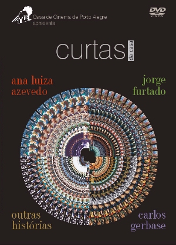

MAIS INFORMAÇÕES
SOBRE OS CURTAS DA CASA
|
* Idiomas Todos os 40 filmes são falados em português. Alguns deles possuem áudio alternativo em outra(s) língua(s): "Ilha das flores": inglês, espanhol e francês |
 |
{kind=link}
* Legendas
Os 33 filmes produzidos para cinema possuem legendas em 4 línguas: inglês, espanhol, francês e português.
Os 7 filmes produzidos para TV ("O Bochecha", "Dia de visita", "A
Importância do currículo na carreira artística", "O Amante amador",
"Faustina", "O Comprador de fazendas", "Meia encarnada dura de sangue" e "Anchietanos") possuem legendas apenas em inglês e português.
Os extras não possuem legendas.
* Tipo de áudio
Estéreo (2.0).
* Formato de tela
34 dos 40 filmes foram rodados no formato 1.33 (4x3 ou "full screen"). Portanto, podem ser apresentados na tela da TV sem qualquer perda de imagem.
"O Sanduíche", "Dona Cristina perdeu a memória", "Deus ex-machina" e "Um Homem sério" foram rodados em proporção de tela 1.85 (padrão norte-americano). Para que estes filmes sejam vistos na TV sem perdas, foram colocadas barras em cima e em baixo ("letterbox").
"Angelo anda sumido" e "Estrada" foram rodados no formato 1.66 (padrão europeu). Como a diferença entre 1.66 e 1.33 é pequena, optou-se por apresentar estes filmes com pequenos cortes nas laterais, preenchendo toda a tela ("full screen").
* Região/Zona do DVD
Sem restrição. Vale para todas as zonas.
* Tipo de disco
DVD5 (uma face, uma camada).
* Extras
Todos os menus em 4 línguas: português, inglês, espanhol e francês.
DVD Ana Luiza Azevedo: depoimento da diretora (11 min), making of "Dona Cristina perdeu a memória" (5 min).
DVD Carlos Gerbase: depoimento do diretor (11 min), bastidores "Deus ex-machina" (2 min), making of "Passageiros" (14 min).
DVD Jorge Furtado: depoimento do diretor (8 min), making of "A Matadeira" (16 min) e making of "O Dia em que Dorival encarou a guarda" (11 min).
DVD Outras histórias: não possui extras.
DVD bônus (apenas para os primeiros mil compradores): além de "Anchietanos" (50 min) e "Meia encarnada dura de sangue" (23 min), tem ainda um programa da TVE feito durante as filmagens de "O Dia em que Dorival encarou a
guarda".
* Tempo total
596 minutos (ou quase 10 horas) nos 38 filmes; mais 73 minutos nos filmes-bônus; mais 95 minutos de extras.
* Faixa etária
Os DVDs Ana Luiza Azevedo, Jorge Furtado e Outras histórias são indicados para todas as idades. O DVD Carlos Gerbase é recomendado para maiores de 18 anos (cenas de nudez).
* Tipo de embalagem
Cada um dos DVDs vem em caixa plástica individual, a cores, com fotos e título dos filmes. (O DVD bônus, para os primeiros mil compradores, vem em encaixe extra na caixa "Jorge Furtado"). O conjunto é embalado em caixa de papelão, a cores, com o título de todos os filmes no verso.
Acompanha ainda um encarte exclusivo com 28 páginas (18,5 x 12,5 cm), impresso a cores, contendo sinopse, ficha técnica e fotos de todos os filmes, em português e inglês.
* Dimensões da caixa
194 x 135 x 68 mm.
Aproximadamente 500 g.